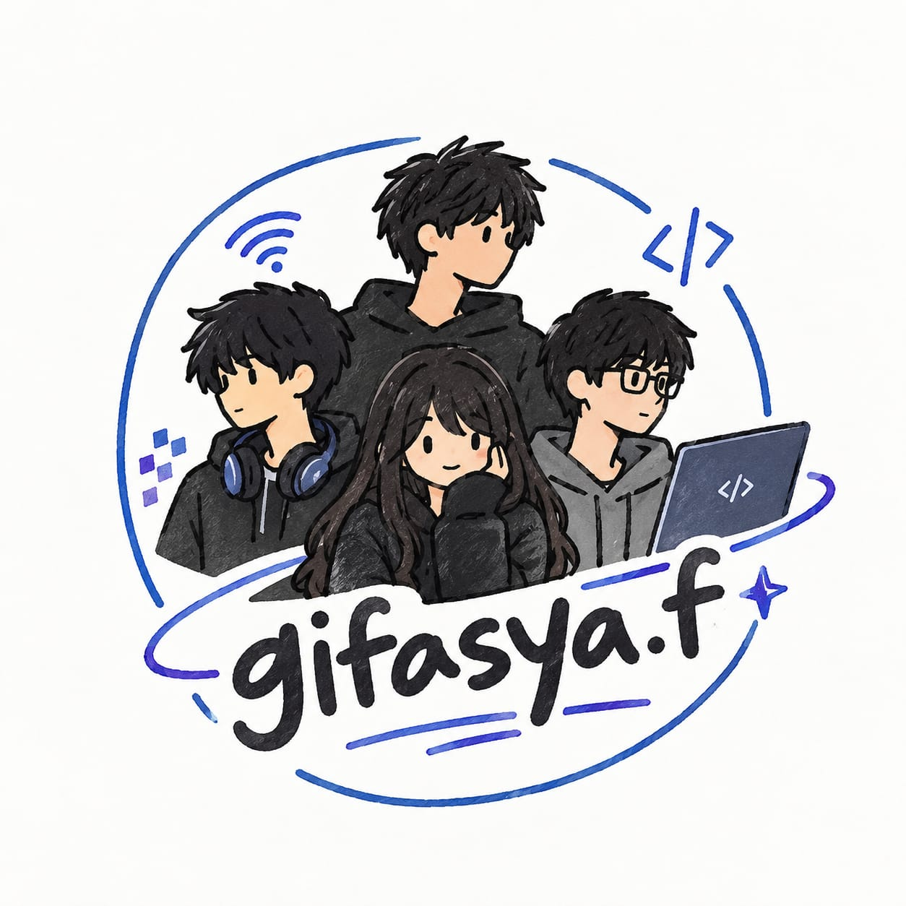

Logo gifasya.f menggambarkan empat orang, yaitu satu perempuan dan tiga laki-laki, sebagai simbol kebersamaan, kekompakan, dan kerja sama. Gaya gambar yang sederhana dan seperti coretan tangan memberikan kesan natural, santai, dan dibuat sendiri, sesuai dengan karakter kelompok gifasya.fn dan perjalanan kelompok, sedangkan warna biru dan ungu menggambarkan teknologi, ketenangan, kreativitas, dan inovasi. Gaya gambar yang sederhana dan seperti coretan tangan memberikan kesan natural, santai, dan dibuat sendiri, sesuai dengan karakter kelompok gifasya.f.